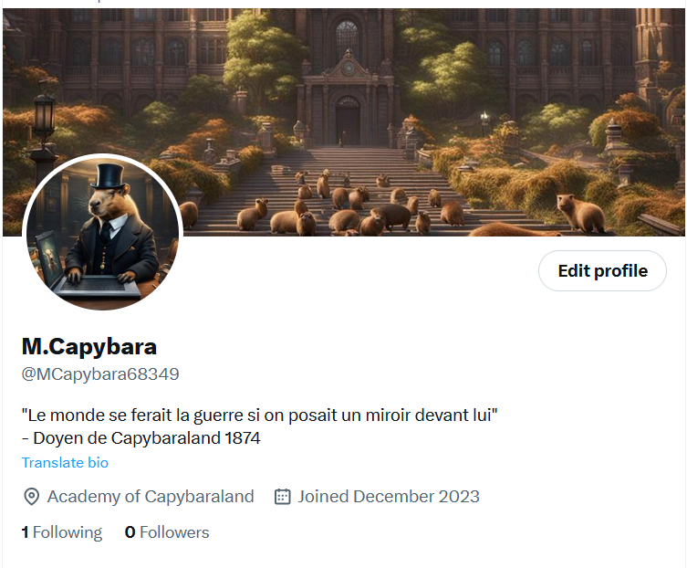

Bot twitter
Parlons de mon projet concernant la programmation d'un bot twitter
Le programme est fait en python et utilise la librairie tweepy ainsi que l'APIv1 et APIv2 de twiter.

L'objectif de ce programme consiste à mettre en oeuvre un bot sur le réseau social twitter en utilisant leur application de programmation d'interface.
Le bot doit pouvoir récupérer le lien du dernier tweet posté par un compte donné et y répondre en faisant un discours élogieux sur les capybaras. Le bot doit pouvoir viser un compte, voir, plusieurs comptes.
Le texte généré par le bot doit pouvoir changer (partiellement) d'un tweet à un autre. Pour cela, un chatbot générant du texte est requis. Le texte utilise un langage soutenu,
et fait référence aux capybaras et au pays imaginaire du nom de Capybaraland.
La programmation du bot se fait sur python. Pour cela j'utilise la librairie tweepy qui permet d'utiliser l'API de twitter. Tweepy permet également une authenticafication aux APIs.
Ici, l'API V1 et V2. L'authentication marche grâce à des tokens visibles sur le compte developpeur de twitter. Il existe différente méthode d'authentification, utilisant différent token.
Ces différentes méthodes permettent de se connecter à l'APIv1 ou à l'APIv2. Le code marche actuellement avec l'APIv1, mais pour des raisons qui seront expliqués plus bas, je suis en train de migrer vers
l'APIv2. Ces deux APIs permettent de faire plusieurs actions comme analyser la page "home" et y récupérer les identifiants des tweets, utile pour répondre ou retweeter etc...
Les API permettent également de répondre, aimer, faire des actions comme un vrai utilisateur.
La première difficulté de ce bot réside en la limitation des possibilités avec l'API gratuit de Twitter. Cela m'a réeellement bloqué dans la programmation,
m'empêchant de mettre en oeuvre toutes les fonctionnalités qui m'intéressaient. J'ai eu l'idée d'utiliser en plus de l'API twitter, d'utiliser le module python,
selenium, pour combler le manque retrouvé dans l'API mais en vain. C'est pour cela que le bot à plus ou moins changer dans sa manière de fonctionner.
Je voulais en premier lieu que le bot prenne par lui-même les liens des tweets récents, mais il m'est impossible, c'est pour cela que le bot fonctionne uniquement avec la saisie manuelle du lien.
Ensuite, le deuxième problème réside dans la réponse généré. Je voulais un bot totalement gratuit, mon idée d'utiliser l'API ChatGPT pour générer du texte en lien avec le tweet n'est donc pas possible.
Le texte est donc généré directement en piochant au hasard une phrase qui se situe dans une liste. L'objectif à venir de ce bot, est de créer une petite IA permettant de générer du texte en lien avec ce qu'on lui donne.
Tout en restant dans le thème du compte, qui est un intellectuel capybara.